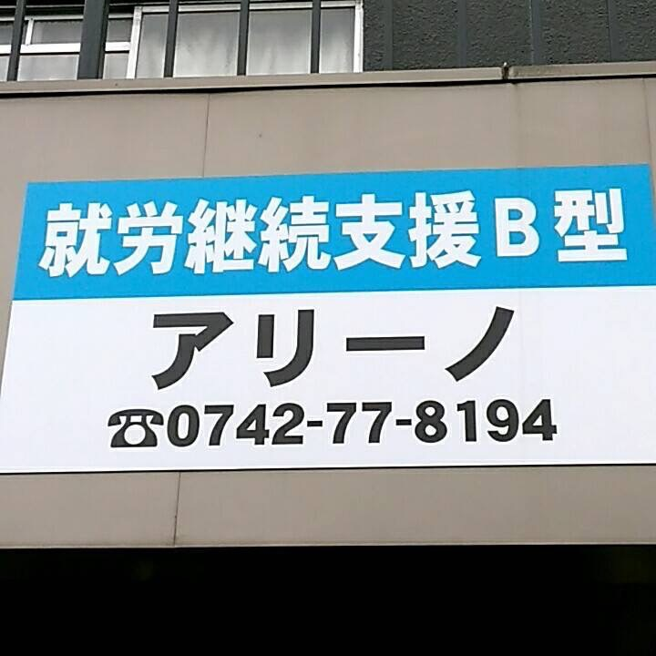

アリーノの理念・特徴
就労継続支援B型事業所 アリーノは、奈良市にある障がいのある方の就労を支援する事業所です。
小さくても、静かでも、まっすぐな思いは天に届く。
その信念を、「アリーノ」という名前に込めました。
私たちは、一人ひとりの歩みに寄り添い、共に希望の道をつくっていきます。
就労が困難な方でも、ご自身のペースで日中の居場所としてご利用いただけます。
介護福祉士・救急救命士のスタッフが常駐しており、安心して過ごせる環境を整えています。
☆無料送迎もあります（送迎範囲はご相談ください）
作業内容
利用者一人ひとりに合った軽作業を提供しています。
一般就労を目指す方向けには独自の就労支援プログラムも実施中。
1日の流れ
- 10:00～16:00 作業（50分作業＋10分休憩）
- 12:00～13:00 昼休憩
イベント紹介
定期的にお菓子パーティやビンゴ大会などを開催。皆広い年代の方が楽しく交流しています。

お菓子パーティの様子

たこ焼きパーティーの様子

作ったたこ焼き
ギャラリー

施設の外観。明るく清潔な環境です。

親切で頼れるスタッフが常駐しています。

利用者様が作業に取り組んでいる様子。
お問い合わせ
就労継続支援B型事業所アリーノでは利用者さんを随時募集しております。施設見学や体験利用などお気軽にお問い合わせください。
まずはお気軽にお電話ください。
06-6575-7647
就労継続支援B型事業所 アリーノ